Cells display with a
Ident: If you want to use the result of this formula in another calculation later in the report, you need to give the cell a unique name—this is entered in the Ident field. Leave this blank if you do not need to access the cell.
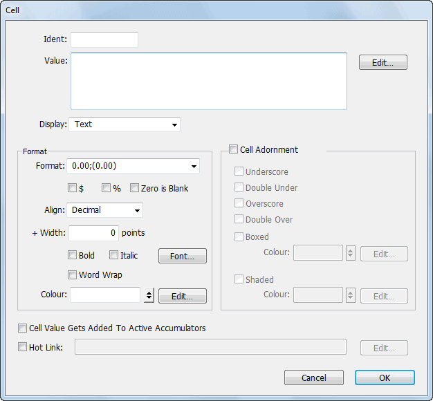
Value: Enter the text or formula to appear in the cell into the Value edit box, or click the Edit button to open the Calculation window. Only the text that fits in the cell’s column width will be printed (unless the Word Wrap option is set). A formula needs to start with an equal sign (“=”): e.g.=if(Col6 < 0, "Less:", "Plus:") + " Adjustments"
It is also possible to enter text, formulae and to format individual cells in the report layout. You can, for example, use a cell to enter the description of an accumulator total when you show the accumulator, or even to change the format of underlying information. A cell is formed by the intersection of parts and columns.
little diagonal line in the top-right corner. If the cell has a result name, then the on-screen representation shows as
"resultname=expression"
The formula will be evaluated when the report is printed, and the result used in the report.
Tip: An empty formula (consisting of just the = sign) will display the underlying value that the cell is covering, but with the adornment and formatting specified in the cell settings.
To create a cell, or modify an existing one, simply double click on the intersection of the part and column to bring up the Cell Settings dialog box:
Image: Set this to display a product image (if any). The Value must resolve to the Code of the product. The image will be scaled to the cell width; the aspect ratio of the image is retained, unless the cell has been resized, in which case the image will be stretched. The special code of "Builtin:CompanyLogo" will display the company logo in the cell. In v9.1.1 and later, a value beginning with "transaction:" or "key:" can be used to display an image for a transaction sequence number or for a user-stored image.
As Chart: Set this to the cell display a chart of the cell calculation (which should evaluate to a table, as for composite charts in the chart part type. MoneyWorks will determine a suitable aspect ratio.
Blank: A blank cell can perform a calculation on a printed part, but will not itself print. This saves having to put a Remark in just to do the calculation.
Barcode: A barcode will be displayed in the nominated encoding. The value of the cell should resolve to a valid string of the form “encoding:data”, where encoding is one of EAN13, Code128, or (in v8.1.6 and later) QRCode (e.g. “EAN13:941900793006”). If the encoding is omitted, Code128 is assumed. Note that the text for the Code128 barcode should be wrapped in the MoneyWorks Code128() function, e.g. “Code128:”+code128(barcodetext). To get a UPC code, use an EAN code starting with 0, e.g. “EAN13:0”+UPC_Code
Format, Align and Font options: Use this to set the format for cell —see Format.
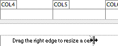
Non-numeric cells should have a format of None.+ Width: A cell can be wider than its column provided that the next column does not also have a cell in it. Use this to specify the additional width, or drag the right hand boundary of the cell.
Word Wrap: Set this if you want the text in the cell to wrap round more than one line. If this is not set any text that doesn’t fit in the cell will be truncated. Note that cells to the left of a text with word wrap will be printed aligned to the top of the text wrapped cell; cells to the right will be aligned with the bottom.
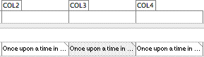
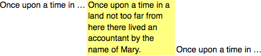
Colour: An expression that results in a colour that is applied to any text in the cell. The expression, which can be conditional, must return one of:
Either: A literal colour from “None”, “Orange”, “Red”, “Magenta”, “Cyan”, “Blue”, “Green”, “Brown” , e.g. =”Red”, or a user specified colour name (e.g. =“Urgent” )
Or: A number in the range 0-7, which corresponds to the colours above;
Or: A result in 24 bit RGB colour format, similar to HTML colours (0 is black). These are easily expressed as hexadecimal values, a # followed by six characters, e.g. #FF0000 which is red.
if(self < 0, #FF0000, 0)
returns the value #FF0000 (Red) if the value of the cell (as represented by the keyword self) is less than zero.
Tip: You can use the stored colour value in a record to set the colour in a portable way. So =Account.Colour will print in the colour of the current account in an account range. Or, if you have a for-loop iterating over, say, products and the control variable is called PROD, then you would use
=PROD.Colour.
Cell Adornment: Use the cell adornment to apply underlines, overscores, boxes or shading to the cell. The colour options for boxing and shading operate in the same manner as those for the text, allowing you to have conditional boxing or shading.
Cell gets added to active accumulators: Turn this option on if you want the (numeric) value in the cell to be added to all active accumulators.
Hot Link: If you want to provide this cell with drill down capability, you need to set this option and specify the drill down hot link. The hot link indicates where in MoneyWorks you want to drill down to, and what information to display. You get automatic drill-down information for account codes and descriptions, and also for ranges of accounts when using a subsummary. See building hot links.
To remove a Cell:
Click on the cell to select it, then click the Delete toolbar button
Different reports may have different requirements regarding how they handle financial periods. For example for some reports it might be appropriate to print the report over a range of periods, whereas for others it is only sensible to print it for a single period. Also some reports may have specific “environmental” variables or options that you need to specify at run time, such as a projected exchange rate, or number of work days in a month.
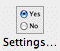
To set the Report Preferences:
The Report Preferences window will open.
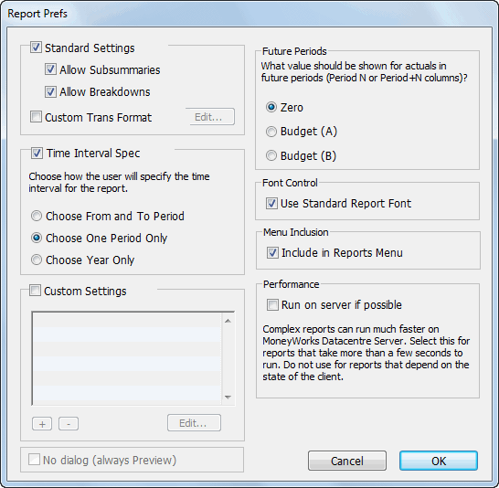
Set the options you require (as discussed below) and click OK
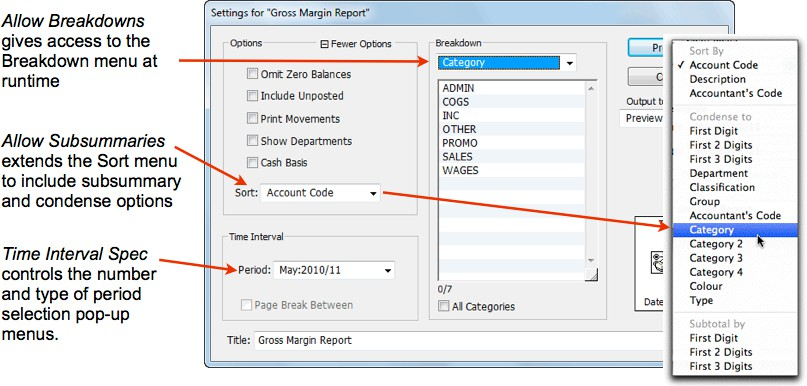
The Standard Settings, Time Interval Spec and Custom Settings options determine which options are displayed in the Report Settings window when the report is run, and hence how configurable the report is at runtime.
This adds run-time sub-summary options to the Sort pop-up menu in Report Settings window, allowing the user to select a sub-summary or condensed report at runtime —see Subsummary Reports. Note that subsummaries can also be built into a report part —see Summarise these accounts, and that these override the user-selectable ones.
This gives the user access to the Breakdown options in the Report Settings window —see Breakdowns. If the option is not set, the user will not be able to do reports by (for example) individual department.
Set this if you want to provide your own format for the layout of any transactions printed (using the Show Movements option) when the report is printed. When you set this a new report window will be displayed:
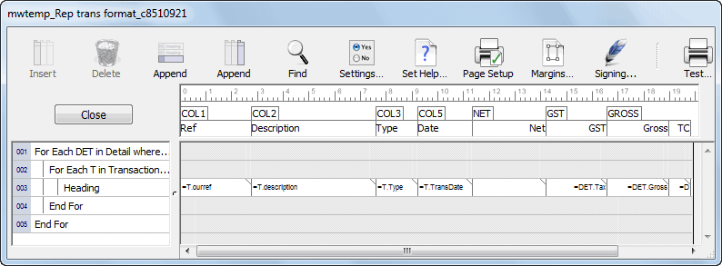
It is this “sub-report” that is processed whenever transactions need to be printed. It is set up to step through the relevant lines and print out the transaction information. You can move, delete, resize or add columns, or even add new parts (but be circumspect—a page break in the For loop will chew through a lot of paper, and a Range of Accounts will give unpredictable results). The actual information to be displayed is extracted using a cell formula.
Determines the number of period menus available when printing the report. If it is not appropriate that your report has such menus (such as a back order report), you should turn this option off.
Choose From and To Period Two period pop-up menus will be displayed in the Report Setup box, allowing the selection of multiple periods for the report. One copy of the report will be printed for each period in the selected range.
Choose One Period Only A single pop-up period menu will be presented in the Report Setup box. The report will only be printed for the one selected period. You would use this setting where you have a report with (say) the 12 previous months listed in it in separate columns.
Choose Year Only A single pop-up menu with the Year Names will be presented in the Report Setup box. The report will only be printed for the nominated year, and the report period is set to the last period of the year. You would use this setting where you have a report that lists all the periods in a financial year in separate columns.
Turn this option on if you want to add custom controls, privilege control or environment variables to your report. Any controls created here will appear below the Sort menu in the Report Settings window, and can be set by the user when the report is run. See Custom Settings for more details.
This can only be set if there are no other output settings. If set, no Report Settings will be displayed when the report is run, and it will always be previewed. You will not be able to print, email, send to Excel etc (although you can print and email from the Preview window).
In MoneyWorks it is possible to show data in a report from a period that has not yet occurred (i.e. after the current period). The Future Periods options allow you to specify what you want to show in this case:
Zero The value for future periods will be displayed as zero. Budget (A) The A budget will be used for the future periods. Budget (B) The B budget will be used for the future periods.
Use Standard Report Font: If this is set, the report will only use the standard report font and size. Any individual fonts that might have been built into the report are ignored, although their Style attributes will be maintained.
Complex reports can run much faster on the MoneyWorks Datacentre Server. However such reports must be able to run independently of the client (so for example cannot process a selection of highlighted records, unless you pass the selection to the server an invisible control. Select this option for eligible reports that take more than a few seconds to run.
Tip: Hold down the Shift key when you click Preview and MoneyWorks will reverse the setting if possible when it prepares the report.
Turn this on if you want to make a Report Script. Such a report, if placed in the MoneyWorks Custom Plug-ins/Scripts folder, will appear at the end of the Command menu (along with other user installed scripts). This allows you to use reports as simple scripts.
If this is turned on, no output options apart from your custom controls will be presented when the report is run. The Print/Preview button is replaced by a Run button. Any output generated by the report will appear in the Preview window.
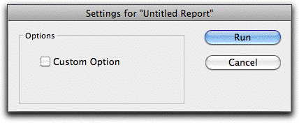
For the No Output Options to be enabled you must first turn off the Standard Settings and Time Interval Settings.
You can add your own custom controls or environment variables to your report using the Custom Settings option. Any controls created here will appear below the Sort menu in the Report Settings window, and can be set by the user when the report is run.
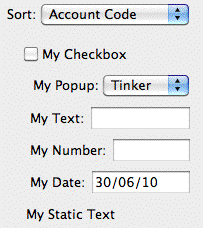
Controls can be Check Boxes, Radio Buttons, Pop-up menus, and fields for entering text, numbers and dates, plus just plain text. In addition you can provide scripts to control the Report Settings dialog, and a Privilege Check to control access to the report.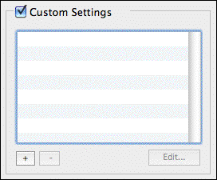
This is what will appear as a label to the control on the Report Settings window, and hence needs to be something meaningful to the user. It is also made available as a variable within the report, so you can access its value. Thus a name of “Number of Students” becomes the report variable Number_of_Students.
You should not make the name too long, as there is limited space for it to display (“Number of Students” is
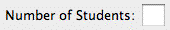
probably a bit too long; “Student Count” might have been better).
It is important that your name not conflict with any of the
The longer the label, the less room for data
To add a custom control: click the + button
To delete a custom control: highlight the control in the list and click the - button
To move a custom control: Drag the control up or down in the list.
Double-click it in the list, or highlight it and click the Edit button
The Custom Control window will be displayed.
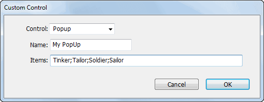
Type the name of the control into the Name field
existing report variables. Thus names like “Period” or “YearEnd” are to be avoided. The existing names can be seen listed in the Calculation window, available when you click the Edit button in a report calculation.
The choices in a pop-up menu are entered into the Items field of the Custom Control window. Individual choices are separated by a “;”. A “(-” will insert a separator into the menu. Thus:
All;(-;Lots;Some;None)
results in the pop-up menu shown on right.
The special value #PER can be supplied as a pop-up menu value, which results in a pop-up menu of periods. The value returned is the period number.
Use the Find() function with a semicolon as a delimiter to
populate the pop-up menu with data from your accounts. For example, set the Items field to the following to display up to 100 bank accounts in the pop-up menu:
=find("Account.code","system = `BK`", 100, ";", "account.code")
Use an invisible control to generate some pre-calculated value. You will need to use these if your report operates on a selection of records, and you want to run the report on the Datacentre Server. Because the server has no idea what selection the user has made in a list, you need to capture it in the report settings, which are then passed back to the server for processing.
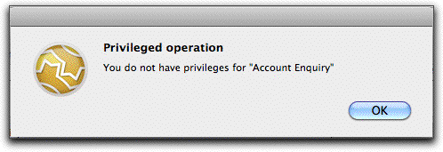
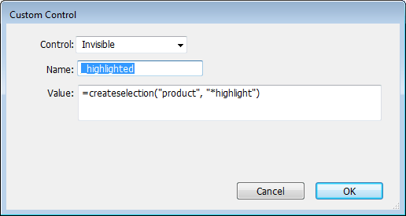
For more information on pre-calculated selections, see Selections.
Adjacent radio buttons are considered to form a single group (i.e. only one button can be set at any one time). If another control separates the radio buttons, then they will operate as different groups, allowing you to use static text to give you a label, or even an invisible control to logically group your radio buttons.
Access to the report can be controlled by a specific user privilege (as well as by signing). This is achieved by using the Check Privilege control, and choosing the privilege the user must have to run the report from the supplied list of privileges. For example, the following setting means that a user must have the Account Enquiry privilege set to run the report:
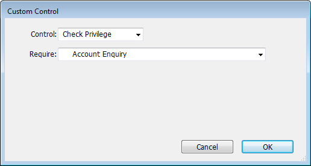
The following will be displayed if a user without the privilege attempts to run the report:
If there is more than one Check Privilege control in the report, the user must have access to all privileges specified. Note that users who do not have the Signing and Using Unsigned Forms and Reports privilege will still need to have the report explicitly signed to them.
You can provide a script as a report control that can (among other things) control the highlighting of your custom controls, or provide some complex form of access control.
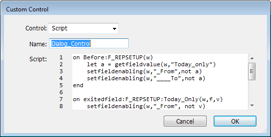
Note that the WindowID for the report setup dialog is F_REPSETUP.
Tip: It is much easier to write and debug a script in the script editor window than in the control window. Get it working there, and then create the custom script control and copy and paste the script text. Make sure the control has the same name as the original script, and remember to deactivate the script.
Tip: Public handlers in the report script (or any loaded script. provided the report is not being run on the server) can be seen from the report, allowing you to make custom functions that can be used by the report. For example the following handler in a script control named “repScript”:
on trickycalculation(x, y) public
would be accessed from the report by something along the lines of:
=repScript:trickycalculation(3.141, 42)
See the Recurring Transaction report, which contains a script to calculate the next recurrence of a transaction, for an example of this.
Note: You can include an on SetupReport handler in a script. This will run just before the report itself is executed, and allows you to dynamically set a column width in the report, as in the following example:
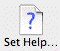
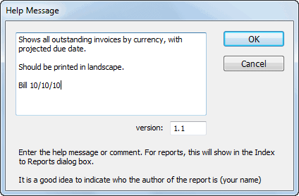
The help text entry window will be displayed.on SetupReport SetReportColumnWidth("TAXCOL",if(Val("Show_Tax"), 80, 0))
end
If the handler returns false, the report will silently abort.
For more information on scripts, see Scripts, Automation and the REST of it.
It is often useful to provide a brief summary of what the report is for, and how it should be used. This is accomplished by means of the help text, which is displayed when the report is selected in the Index to Reports, as shown:
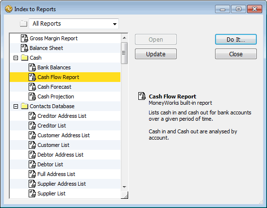
The version number is useful for managing deployment of reports, and ensuring people are not using an obsolete version.
In a multi-user environment, you may want to restrict access to the report only to authorised users, and/or upload it to the Datacentre Server. You can do this once you have completed and debugged the report by clicking the Signing toolbar icon (see Protecting Reports and Forms by Signing for more details).
Note that if you modify a previously signed report, you will need to re-sign it. The report signing is in addition to any Check Privilege controls that exist in the report (e.g. if the report has a Check Privilege of Account Enquiry, Jo will not be able to access the report even though it is signed for him unless the Account Enquiry privilege is turned on in his user privileges).
It is possible to chain a number of reports together so that they print sequentially. Note that report chains are deprecated, as equivalent reports can now be created using For-Loops in a single custom report.
Caution: As a report chain consists of a number of separate reports (files), they will cease to operate if one or more of the component reports are moved, renamed or deleted.
A report chain can be used to have a number of reports print as a single job. This is useful if the reports will take some time to print and you don’t want to attend the computer to start each one printing individually. This is called a Simple Report Chain.
When printing a Simple Report Chain, each report uses the page setup and report settings that have been saved with the chain document, and each report will always start on a new page.
A report chain can also be used to create a single compound report in which members of the report chain are printed with their own individual breakdown settings. This allows you to have breakdowns within a report, rather than simply having the report reprinted for each item in the breakdown. This is called a Compound Report or Chain Report.
When printing a Compound Report, you have a single page setup for the whole report, but each element of the chain (or sub-report) has its own report settings.
As a simple example of this process, you could create a report with two basic parts designed to print details of all income accounts and then expense accounts. When printing this report using a breakdown by category, the report would print income and then expense details for the first category, and then repeat the process for subsequent categories.
If you wanted a report which printed a category breakdown for all income accounts in one section, and then repeated the process for the expense accounts, you could create two sub-reports and chain them together. Each sub- report would contain the appropriate part (containing either the income or the expense accounts) and would print a full breakdown of the accounts in that range in a consecutive block.
Simple and Compound report chains are created the same way.
Ensure that you have created and saved all the reports that you would like to include in a chain. Reports not stored in the Reports folder in either your Custom Plug-ins folder or Standard Plug-ins folder will not be available in the Report Chain dialog box.
An Untitled Report Chain window is displayed.
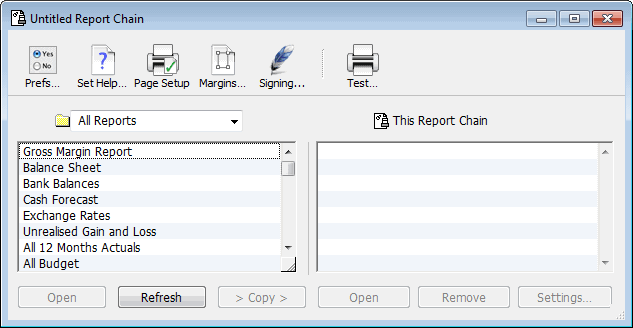
All the reports in the Reports folder(s) appear in the scrolling list on the left
Double clicking the report name will also add it to the chain.
Highlight a report in the This Report Chain list and use the Remove button to remove a report from the chain if you make a mistake.
You can open one of the reports in your chain in a Report Editor window to see what it looks like by highlighting it in either list and clicking the appropriate Open button.
This allows you to specify the report settings that will be used for the printing of the sub-report as part of the Report Chain.
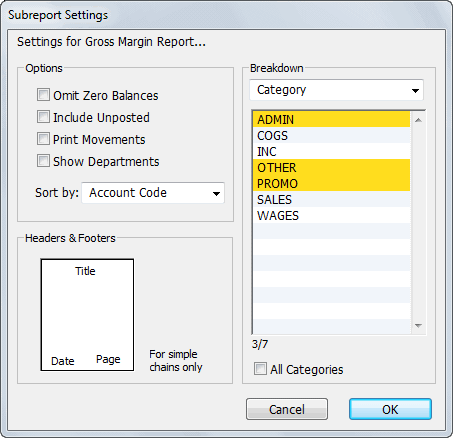
Select the desired options for the sub-report from the check boxes.
Choose the Breakdown (if any) for the sub-report from the Breakdown pop- up menu. This works in the same way as it does for an ordinary report except that the breakdown (and the other options) will affect only this part of the chain.
Changes to the settings made here will be saved as part of the Report Chain document (they do not affect the saved settings for the original sub-report document).
The Headers and Footers options apply only to Simple Report Chains (they are ignored for Compound Chains).
Double clicking the report name in the right hand list also brings up the Settings dialog box
The Chain Report Prefs window will be displayed.
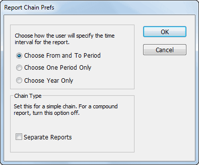
Set the Separate Reports option
The Report Help Message will be displayed into which you can type information about the report.
Reordering a Chain Report: To reorder the reports, hold the cursor over a report in the This Report Chain list and drag either up or down.
To Save the Report: Choose File>Save Report to save the report. If you close the Report Chain window, you will be asked if you want to save any changes you have made.
To Test the Report: To print the chain report click the Test Toolbar button. The
Report Settings dialog box for the chain appears.
Refresh Button: New reports that you create while the Report Chain window is open will not automatically appear in the Reports List. If you want to use new reports in the report chain, click Refresh—the left hand report list will
be updated to represent the current reports in your Reports folders.
[transaction:Type = "DII"] // will limit the display to incomplete debtor invoices (receivables).
[Transaction:SequenceNumber = 1234] // the transaction whose seq is 1234
[Account:Type = "CA"][Details] // the detail lines that pertain to a current asset account
[Account:Type = "CA"][Transaction:Period > X and Period < Y][Details]
Use the Open command from the File menu and choose a report chain document, or locate the report in the Index to Reports and click the Open button.
You can change the reports in the chain by clearing out those that you no longer want, and adding new ones with the Remove and Copy buttons.
You can also modify the settings for particular reports in the chain by using the
Settings button.
Click in the close box to close the report chain (you will be prompted to save the report chain).